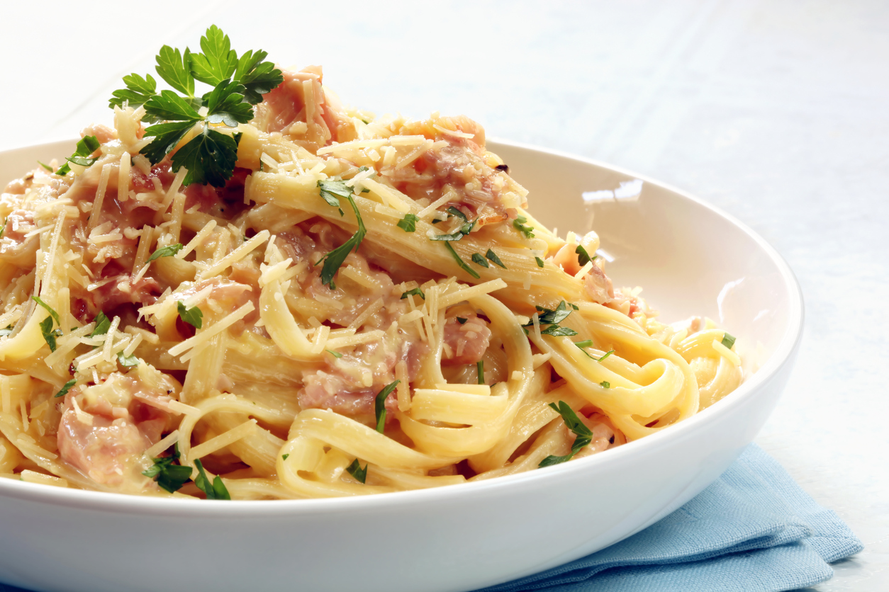

Creamy Bacon carbonara

Creamiest carbonara you'll ever have!
Ingredients:
- 1 tbsp olive oil
- 6 or 7 slices of bacon, cut into 1/2 inch pieces
- 1 small yellow onion, chopped into tiny pieces
- 5 cloves of garlic, cut into thin slices
- 1 tbsp black pepper
- 1 1/2 tsp parsley
- 10-12 oz pasta (linguine, fettuccine, or spaghetti
- 1 cup grater parmesan plus more as needed
- 2 egg yolks
- grated zest and juice of 1 lemon
- salt to taste
Steps
- In a large frying pan, warm up the olive oil over medium heat. Cook the bacon, frequently stirring, until it is crispy — about three to five minutes. Add the onion and garlic. Cook them until they are soft, about five minutes. Add the pepper and parsley and cook another minute.
- Meanwhile, cook the pasta according to the directions on the box. Cook the pasta al dente. When it’s done, remove 1 1/2 cups of the cooking liquid and set aside. Drain the remaining liquid.
- dd the pasta to the frying pan along with 1/2 cup of the cooking liquid and 1/2 cup grated parmesan. Cook the pasta mixture until it is well-combined. Make sure the pasta is evenly coated.
- Remove the frying pan from the heat and add the egg yolks. Toss the pasta mixture with the egg yolks until a smooth sauce evenly covers the pasta. Add more of the liquid if you need it.
- Add the grated lemon zest, lemon juice, salt, and remaining grated parmesan. Toss the pasta again to coat it evenly. If the sauce is too thick, add more of the cooking liquid to loosen it up a little.
- Divide the pasta among four bowls. Top each serving with more parmesan and lemon zest if desired.
Back